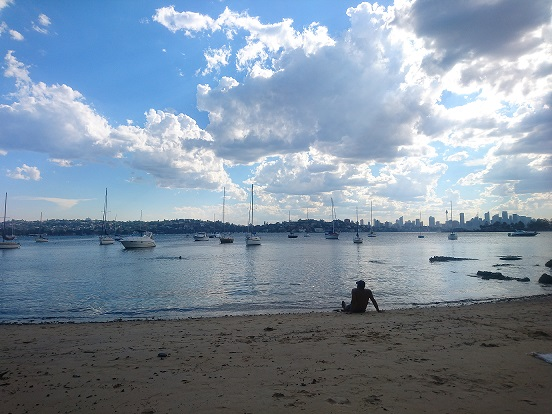

Two of the main sports I play and follow are basketball and badminton. Back in Australia I play social basketball with my friends, I also follow NBA basketball as I have a lot of spare time. As for badminton, I've played since I was young and I used to participate in competitions. Nowadays I play badminton socially and to represent my university back in Sydney.
In Sydney I love going to concerts and dance events. While I listen to variety of genres of music, I listen to trance and hardstyle in particular which is quite popular in Australia. Some of my favourite artists are Code Black, Wasted Penguinz, Gareth Emery and Dash Berlin.
Here is a link for "We Were Young" by Gareth Emery
In Sydney I love to hike, there are many nice trails and national parks within 30 minutes of the city central. Australia is also famous for its beaches and there are some really beautiful ones close to where I live.
